건축기사 (2011-06-12 기출문제)
1과목: 건축계획
1. 주택의 평면계획에 대한 설명 중 옳지 않은 것은?
- 기능 및 관계가 상호간 연관이 있는 실 및 공간은 인접시키는 것이 좋다.
- 대규모 주택의 경우 거실, 식당, 주방 등을 독립적으로 구성하는 것이 좋다.
- 거실은 일조 및 채광의 충분한 확보를 위해 가능한 동측이나 남측에 배치하는 것이 좋다.
- 식당은 어떤 공간의 위치보다 조용하고 프라이버시 유지가 가능한 곳에 배치하는 것이 좋다.
(정답률: 84%)

2. 다음 용어 중 극장 건축과 가장 거리가 먼 것은?
- 캐럴(carrel)
- 그린 룸(green room)
- 그리드아이언(gridiron)
- 사이틀로라마(cyclorama)
(정답률: 89%)
3. 쇼핑센터 계획에 대한 설명 중 옳지 않은 것은?
- 몰(Mall)에는 확실한 방향성과 식별성이 요구된다.
- 전문점들과 중심상점의 주출입구는 몰에 면하지 않도록 한다.
- 페데스트리언 지대(Pedestrian Area)의 구성을 통해 구매 의욕을 도모하고 휴식공간을 마련한다.
- 전문점의 레이 아웃(Lay-out)과 전체적인 구성은 쇼핑센터의 특성 및 몰(Mall) 구성의 특색에 따라 결정 하는 것이 좋다.
(정답률: 86%)
4. 주거단지의 보행자 동선계획에 대한 설명으로 옳지 않은 것은?
- 보행자 전용도로의 폭은 충분히 넓게 확보하도록 계획 하는 것이 좋다.
- 필로티, 스트리트 퍼니처, 도로의 텍스츄어 등의 배려를 하는 것이 좋다.
- 목적동선이 그 길이가 길어지더라도 쾌적한 분위기의 연출이 가장 중요한다.
- 생활편의시설 및 놀이터나 공원 등의 커뮤니티 시설은 보행자 도로에 인접하여 설치하는 것이 좋다.
(정답률: 85%)
5. 은행건축에 대한 설명으로 옳은 것은?
- 직원과 고객의 출입구는 보안 관계상 별도로 설치하지 않는다.
- 고객의 대기공간(객장)과 영업공간의 면적비율은 2:8 정도로 하는 것이 가장 바람직하다.
- 은행 내부의 동선계획시 고객의 목적과 관계없이 하나의 동선으로 고객을 유도하는 것이 바람직하다.
- 대규모의 은행일 경우에도 고객의 출입구는 되도록 1개소로 하고 안여닫이로 하는 것이 보편적이다.
(정답률: 71%)
6. 학교 교사의 배치계획 중 폐쇄형에 대한 설명으로 옳지 않은 것은?
- 화재 및 비상시에 불리하다.
- 일조ㆍ통풍 등 환경조건이 불균등하다.
- 일종의 핑거 플랜으로 구조계획이 간단하다.
- 교사 주변에 활용되지 않은 부분이 많은 결점이 있다.
(정답률: 79%)
7. 병원의 수술실에 대한 설명으로 옳지 않은 것은?
- 타 부분의 통과교통이 없는 장소에 배치한다.
- 인공조명은 음영이 생기지 않는 조명으로 한다.
- 자연채광을 충분히 할 수 있도록 남측에 큰 창을 설계하는 것이 좋다.
- 공기조화는 다른 병실과는 별도 계통으로 하여 수술실만을 독립하여 조정할 수 있게 한다.
(정답률: 90%)
8. 다음의 건축양식과 해당 건축양식의 특징적 요소의 연결이 옳지 않은 것은?
- 로마네스크 건축 - 펜덴티브 돔(pendentive dome)
- 고딕 건축 - 플라잉 버트레스(flying buttress)
- 고대 로마건축 - 컴포지트 오더(composite order)
- 비잔틴 건축 - 도저렛(dosseret)
(정답률: 48%)
9. 백화점 계획에 대한 설명 중 옳지 않은 것은?
- 수평동선 계획시 백화점 내에 진입한 고객들을 매장 내부 구석까지 유도할 수 있도록 한다.
- 백화점의 속성상 각 상점이 외부의 채광으로부터 영향이 크므로 일조권 확보 계획을 우선시 한다.
- 2면 도로의 경우 Main 도로측에 보행자 출입구, Sub 도로측에는 차량 및 종업원 출입구를 계획한다.
- 통로계획시 고객을 분산시킬 수 있으며, 단조롭거나 상대적으로 혼잡하지 않은 세밀한 계획이 필요하다.
(정답률: 88%)
10. 메조넷형(Maisonette Type) 아파트에 대한 설명으로 옳지 않은 것은?
- 통로가 없는 층의 평면은 프라이버시 확보에 유리하다.
- 소규모 주택에 적용할 경우 다양한 평면구성이 가능하여 경제적이다.
- 통로가 없는 층의 평면은 화재 발생시 대피상 문제점이 발생할 수 있다.
- 엘리베이터 정지층 및 통로 면적의 감소로 전용면적의 극대화를 도모할 수 있다.
(정답률: 85%)
11. 장애인 등의 통행이 가능한 접근로를 설치하는 경우, 접근로의 유효폭은 최소 얼마 이상으로 하여야 하는가?
- 0.6m
- 0.9m
- 1.2m
- 1.5m
(정답률: 67%)
12. 다음 중 시티 호텔(city hotel)계획에서 크게 고려하지 않아도 되는 것은?
- 연회장
- 레스토랑
- 발코니
- 주차장
(정답률: 81%)
13. 르 꼬르뷔제가 제시한 근대건축의 5원칙에 해당하는 것은?
- 필로티
- 유니버셜 스페이스
- 노출 콘크리트
- 유기적 건축
(정답률: 74%)
14. 다음의 미술관의 각종 평면형식에 대한 설명 중 옳지 않은 것은?
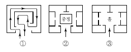
- ①의 경우는 소규모의 전시실에 이용이 불가능하며 대규모의 전시실에 적합하다.
- ②의 경우는 필요시 자유로이 각 실을 독립적으로 폐쇄 할 수 있다.
- ③의 경우는 전시실의 융통성 있는 선택적 사용이 가능하다.
- ②, ③의 경우는 각 실에 직접 들어갈 수 있는 점이 유리하다.
(정답률: 84%)
15. 공연장 객석 계획에 대한 설명 중 옳은 것은?
- 객석과 객석의 전후간격은 60~80cm가 가장 이상적이다.
- 관객이 객석에서 무대를 볼 때 적당한 수평시각의 허용한도는 90°이다.
- 객석의 가시거리의 한계에서 배우의 일반적인 동작만이 보이는 2차 허용거리는 22m 이다.
- 관객의 눈과 무대 위의 점을 연결하는 가시선을 가리지 않도록 객석의 단면결정을 하여야 한다.
(정답률: 61%)
16. 고대 메소포타미아 지역의 지구라트에 대한 설명으로 옳지 않은 것은?
- 주된 형태 요소는 점이다.
- 이집트 건축보다 수직축을 더 강조하였다.
- 평면은 정사각형에 기초한 중앙집중식 배치로 되어 있다.
- 이집트 신전과 유사한 직선 축 진입방식으로 이루어져 있다.
(정답률: 44%)
17. 다음 중 도서관의 서고면적 1m2당 능률적인 작업용량으로 서의 수용 권수로 가장 알맞은 것은?
- 100권
- 200권
- 300권
- 400권
(정답률: 87%)
18. 페리의 근린주구 이론의 내용과 가장 거리가 먼 것은?
- 내부 가로망은 단지 내의 교통량을 원활히 처리하고 통과교통에 사용되지 않도록 계획되어야 한다.
- 상업지구는 교통의 결절점에는 설치하지 않으며 주거지 외곽의 교통이 편리한 간선도로 부근에 설치하여야 한다.
- 근린주구의 단위는 통과교통이 내부를 관통하지 않고 용이하게 우회할 수 있는 충분한 넓이의 간선도로에 의해 구획되어야 한다.
- 근린주구는 하나의 초등학교가 필요하게 되는 인구에 대응하는 규모를 가져야 하고, 그 물리적 크기는 인구밀도에 의해 결정된다,
(정답률: 65%)
19. 사무소 건축의 코어(core)형태에 관한 설명 중 옳지 않은 것은?
- 외코어형은 사무실 공간과 간섭이 적다.
- 편심코어형은 일반적으로 소규모 사무소 건물에 많이 쓰인다.
- 중앙코어형은 기준층 바닥면적이 대규모인 경우에 적합하다.
- 양단코어형은 대여사무소에 주로 사용되며 방재 및 피난상 불리하다.
(정답률: 82%)
20. 종합병원의 외래진료부에 관한 설명 중 옳지 않은 것은?
- 외과는 1실에서 여러 환자를 볼 수 있도록 대실로 한다.
- 내과는 진료검사에 시간이 걸리므로 소진료실을 다수 설치한다.
- 정형외과는 보행이 편리한 곳에 두고 미끄러질 염려가 있는 바닥마무리와 경사로를 피한다.
- 안과는 진료실, 기공실, 검사실, 암실을 설치하며, 검안을 위해 3m 정도 거리를 확보한다.
(정답률: 67%)
2과목: 건축시공
21. 벽두께 1.0B, 벽면적 30m2 쌓기에 소요되는 벽돌의 정미량은? (단, 벽돌은 표준형을 사용한다.)
- 3,900 매
- 4,095 매
- 4,470 매
- 4,604 매
(정답률: 79%)
22. 바닥판 거푸집 설계시 고려하여야 할 하중들로 짝지어진 것은?
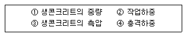
- ①-②-③
- ①-③-④
- ①-②-④
- ②-③-④
(정답률: 73%)
23. 폴리머함침콘크리트에 대한 설명 중 옳지 않은 것은?
- 시멘트계의 재료를 건조시켜 미세한 공극에 수용성폴리머를 함침ㆍ중합시켜 일체화한 것이다.
- 내화성이 뛰어나며 현장시공이 용이하다.
- 내구성 및 내약품성이 뛰어나다.
- 고속도로 포장이나 댐의 보수공사 등에 사용된다.
(정답률: 71%)
24. 다음 배수공법 중 중력배수공법에 해당하는 것은?
- 웰포인트 공법
- 진공압밀 공법
- 전기삼투 공법
- 집수정 공법
(정답률: 73%)
25. Net-Work 공정표에서 사용되는 용어가 아닌 것은?
- Activity
- Operation
- Arbitration
- Duration
(정답률: 66%)
26. 레디믹스트 콘크리트 발주 시 호칭규격인 25 - 24 - 150 에서 알 수 없는 것은?
- 물ㆍ시멘트비(W/C)
- 슬럼프(Slump)
- 호칭강도
- 굵은골재의 최대치수
(정답률: 76%)
27. 철근 이음의 종류 중 원형강관 내에 이형철근을 삽입하고 이 강관을 상온에서 압착가공함으로써 이형철근의 마디와 밀착하게 하는 이음방법은?
- 용접이음
- 슬리브 충전이음
- 슬리브 압착이음
- 가스압접이음
(정답률: 57%)
28. 콘크리트 헤드(Concrete head)에 대해 옳게 설명한 것은?
- 콘크리트 타설 윗면에서부터 최하부면까지의 거리
- 콘크리트 타설 윗면에서부터 최대측압이 생기는 지점까지의 거리
- 콘크리트 타설 윗면에서부터 최소측압이 생기는 지점까지의 거리
- 콘크리트 타설 윗면에서부터 평균측압이 생기는 지점까지의 거리
(정답률: 75%)
29. 다음 중 어스앵커 공법에 대한 설명으로 옳지 않은 것은?
- 버팀대가 없어 굴착공간을 넓게 활용할 수 있다.
- 인접한 구조물의 기초나 매설물이 있는 경우 효과가 크다.
- 대형기계의 반입이 용이하다.
- 시공 후 검사가 어렵다.
(정답률: 75%)
30. 목조 지붕틀 구조에 있어서 중도리와 ㅅ자보를 연결하는데 가장 적합한 철물은?
- 띠쇠
- 감잡이쇠
- 주걱볼트
- 엇꺾쇠
(정답률: 69%)
31. 페로실리콘 합금이나 실리콘 급속 등을 제조 시 발생하는 폐가스를 집진하여 만든 것으로 수화열 저감, 건조수축 저감 등의 목적으로 사용하며 매우 낮은 투수성을 가진 고강도 콘크리트를 만들 때 사용되는 것은?
- 포졸란(pozzolan)
- 플라이 애쉬(fly ash)
- 실리카 흄(silica fume)
- 고로 슬래그
(정답률: 59%)
32. 공정관리의 공정계획에는 수순계획과 일정계획이 있다. 다음 중 일정계획에 속하지 않는 것은?
- 시간계획
- 공사기일 조정
- 프로젝트를 단위작업으로 분해
- 공정도 작성
(정답률: 69%)
33. 다음과 같은 원인으로 인하여 발생하는 용접 결함의 종류는?
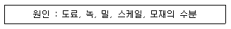
- 피트
- 언더컷
- 오버랩
- 슬래그 함입
(정답률: 68%)
34. 제치장 콘크리트의 시공에 관한 설명으로 옳지 않은 것은?
- 배합수로 사용하는 지하수질도 착색을 일으키는 원인이 될 수 있으므로 주의해야 한다.
- 콘크리트를 한꺼번에 높이 타설하는 경우 기포가 쉽게 발생할 수 있다.
- 콘크리트는 묽은 비빔으로 사용하므로 진동기를 사용하지 않는다.
- 창문, 벽체줄눈, 폼 타이 구멍 등의 위치가 맞지 않은 경우 재시공 및 보수가 어려운 편이다.
(정답률: 81%)
35. 클라이밍 폼의 특징에 대하나 설명으로 옳지 않은 것은?
- 고소 작업시 안전성이 높다.
- 거푸집 해체시 콘크리트에 미치는 충격이 적다.
- 초기투자비가 적은 편이다.
- 비계설치가 불필요하다.
(정답률: 79%)
36. 석고 플라스터에 대한 설명으로 옳지 않은 것은?
- 석고 플라스터는 경화지연제를 넣어서 경화시간을 너무 빠르지 않게 한다.
- 경화, 건조시 치수 안정성과 내화성이 뛰어나다.
- 석고 플라스터는 공기 중의 탄산가스를 흡수하여 표면부터 서서히 경화한다.
- 시공 중에는 될 수 있는 한 통풍을 피하고 경화 후에는 적당한 통풍을 시켜야 한다.
(정답률: 66%)
37. 다음 중 적산온도와 관계 깊은 콘크리트는?
- 고내구성콘크리트
- 노출콘크리트
- 경량콘크리트
- 한중콘크리트
(정답률: 82%)
38. 다음 중 탄성 계수를 구할 때 변형 측정에 이용하는 것으로 가장 정밀도가 높은 것은?
- 다이얼 게이지
- 콤퍼레이터
- 마이크로미터
- 와이어 스트레인 게이지
(정답률: 71%)
39. 타일 시공에 관한 설명 중 옳지 않은 것은?
- 타일 나누기는 먼저 기준선을 정확히 정하고 될 수 있는 대로 온장을 사용하도록 한다.
- 타일을 붙이기 전에 바탕의 불순물을 제거하고 청소를 하여야 한다.
- 타일붙임 바탕의 건조상태에 따라 뿜칠 또는 솔질로 물을 고루 축인다.
- 외부 대형벽돌형타일 시공시 줄눈의 표준나비는 5mm 정도가 적당하다.
(정답률: 77%)
40. 다음 중 건설공사의 품질관리와 가장 거리가 먼 것은?
- ISO 9000
- CIC
- TQC
- Control Chart
(정답률: 69%)
3과목: 건축구조
41. 강재의 응력-변형도곡선에서 변형도 경화영역(stain-hardening range)에 해당하는 기호를 고르면?
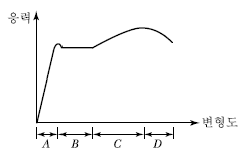
- A
- B
- C
- D
(정답률: 67%)
42. 그림과 같은 부정정 라멘의 B.M.D에서 P값을 구하면?
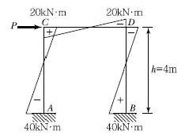
- 20kN
- 30kN
- 50kN
- 60kN
(정답률: 69%)
43. 그림과 같은 구조물에 작용되는 4개의 힘이 평형을 이룰때 F의 크기 및 거리 x는?
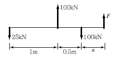
- F=25kN, x=1m
- F=50kN, x=1m
- F=25kN, x=0.5m
- F=50kN, x=0.5m
(정답률: 74%)
44. 콘크리트에서 발생하는 크리프에 대한 설명으로 옳지 않은 것은?
- 일반적으로 건조수축에 영향을 미치는 요인이 크리프에도 영향을 미친다.
- 일반적으로 크리프 변형은 초기에는 작게 일어나지만 시간이 지남에 따라 증가속도가 점점 증가한다.
- 크리프 변형량은 하중이 작용하는 시점의 콘크리트 감도와 재령에 좌우된다.
- 콘크리트에 하중을 제거하면 즉시 탄성회복이 먼저 일어난 후 일부 크리프 회복이 일어난다.
(정답률: 56%)
45. 다음 그림에서 부정정보의 부재력 MAB의 크기는?
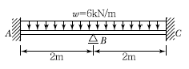
- 2 kNㆍm
- 3 kNㆍm
- 4 kNㆍm
- 5 kNㆍm
(정답률: 43%)
46. 그림과 같은 정정 라멘에서 A점에 발생하는 수직변위를 옳게 나타낸 것은?
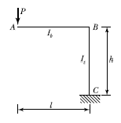
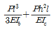
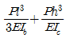
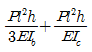
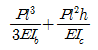
(정답률: 47%)
47. 길이 l= 3.0m, 단면 2차 반경 i= 3.0cm 세장비 λ=100 인 압축력을 받는 장주가 있다. 양단부의 지지조건으로 옳은 것은?
- 양단 고정
- 일단 고정, 타단 힌지
- 양단 힌지
- 일단 고정, 타단 자유
(정답률: 58%)
48. 용접접합설계에 대한 설명으로 옳지 않은 것은?
- 완전용입된 막댐용접의 유효목두께는 접합판 중 두꺼운 쪽의 판두께로 한다.
- 맞댐용접의 유효면적은 용접의 유효길이에 유효목두께를 곱한 것으로 한다.
- 모살용접의 유효목두께는 모살사이즈의 0.7배로 한다.
- 모살용접의 유효길이는 모살용접의 총길이에서 모살사이즈 s의 2배를 공제한 값으로 한다.
(정답률: 64%)
49. 철골구조의 볼트접합에 관한 일반사항에 대한 설명으로 옳지 않은 것은?
- 볼트는 가공정밀도에 따라 상볼트, 중볼트, 흑볼트로 나뉜다.
- 볼트의 중심사이의 간격을 게이지라인이라고 한다.
- 게이지라인과 게이지라인과의 거리를 게이지라고 한다.
- 피치(pitch)는 일반적으로 3~4d(볼트직경) 이며, 최소피치는 2.5d로 한다.
(정답률: 67%)
50. 다음 그림과 같은 슬래브에서 직접설계법에 의한 설계모멘트를 결정하고자 한다. 화살표방향 패널 중 빗금친 부분의 정적모멘트 Mo를 구하면? (단, 등분포 고정하중 WD=7.18kPa, 등분포 활하중 WL=2.39kPa이 작용하고 있으며 기둥의 단면은 300×300mm이다.)
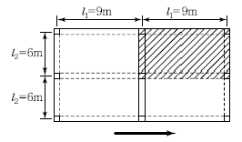
- 406.2kNㆍm
- 506.2kNㆍm
- 706.2kNㆍm
- 806.2kNㆍm
(정답률: 46%)
51. 직사각형 단면의 중심을 지나는 X축에 대한 단면 2차반경은?
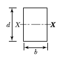
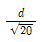
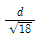
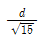
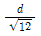
(정답률: 60%)
52. 다음 중 철골구조의 소성설계와 없는 것은?
- 형상계수(form factor)
- 소성힌지(plastic hinge)
- 붕괴기구(collapse mechanism)
- 전단중심(shear center)
(정답률: 52%)
53. 한계상태설계법에 따라 강구조물을 설계할 때 고려되는 강도한계상태가 아닌 것은?
- 기둥의 좌굴
- 접합부 파괴
- 피로 파괴
- 바닥재의 진동
(정답률: 73%)
54. 그림과 같은 구조물에 휨모멘트가 0이 되는 위치의 수는?
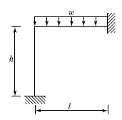
- 1개
- 2개
- 3개
- 4개
(정답률: 41%)
55. 다음 각 구조물에 대한 설명으로 옳지 않은 것은?
- 쉘(Shell)은 주로 면내력으로 외력에 저항하는 구조이다.
- 라멘(Rahmen)은 주로 휨모멘트 및 전단력으로 외력에 저항하는 구조이다.
- 아치(Arch)는 주로 축방향 압축력으로 외력에 저항하는 구조이다.
- 트러스(Truss)는 주로 휨모멘트로 외력에 저항하는 구조이다.
(정답률: 56%)
56. 연약지반의 기초구조에 대한 설명 중 옳지 않은 것은?
- 기초 상호간을 지중보로 연결한다.
- 가능한 한 경질지반에 지지한다.
- 흙다지기, 강제배수 등의 방법으로 지반을 우성 개량한다.
- 말뚝의 사용을 배제한다.
(정답률: 71%)
57. 그림과 같은 강재가 전단력을 받아 점선과 같이 변형되었을 때 전단변형도를 구하면?
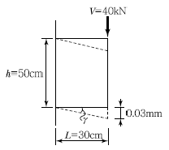
- 0.00006 rad
- 0.0001 rad
- 0.00125 rad
- 0.00075 rad
(정답률: 64%)
58. 다음 중 지반증폭계수가 가장 큰 지반은?
- 경암지반
- 연약한 토사 지반
- 단단한 토사 지반
- 보통암 지반
(정답률: 51%)
59. 다음 H형강 단면의 전소성모멘트(Mp)는 얼마인가? (단, Fy=330MPa)
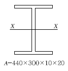
- 1025 kNㆍm
- 963.6 kNㆍm
- 700.8 kNㆍm
- 575 kNㆍm
(정답률: 46%)
60. 다음 그림과 같은 플랫플레이트 슬래브가 450×450mm 정사각형 기둥에 의해 지지되고 있으며 테두리보는 배치되어 있지 않다. 빗금친 모서리 패널의 경우에 현행 기준에서 요구하는 슬래브의 최소두께로 옳은 것은? (단, fck=21MPa, fy=400MPa)
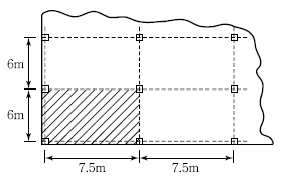
- 195mm
- 215mm
- 235mm
- 255mm
(정답률: 39%)
4과목: 건축설비
61. 조명기구의 배광에 따른 분류 중 직접조명형에 대한 설명으로 옳은 것은?
- 상향광속과 하향광속이 거의 동일하다.
- 천장을 주광원으로 이용하므로 천장의 색에 대한 고려가 필요하다.
- 매우 넓은 면적이 광원으로서의 역할을 하기 때문에 직사 눈부심이 없다.
- 작업면에 고조도를 얻을 수 있으나 심한 휘도의 차 및 짙은 그림자가 생긴다.
(정답률: 71%)
62. 수질과 관련된 용어 중 부유물질로서 오수 중에 현탁되어 있는 물질을 의미하는 것은?
- BOD
- COD
- SS
- 염소이온
(정답률: 67%)
63. 2000명을 수용하는 극장에서 실온을 20℃로 유지하기 위한 필요환기량은? (단, 외기온도 10℃, 1인당 발열량(현열) = 60W, 공기의 정압비열 = 1.01kJ/kgㆍ 공기의 밀도 = 1.2kg/m3, 전등 및 기타 부하는 무시한다.)
- 11,110 m3/h
- 21,222 m3/h
- 30,444 m3/h
- 35,644 m3/h
(정답률: 55%)
64. 실내 열환경 평가지표에 관한 설명 중 옳지 않은 것은?
- 평균복사온도는 편의상 주벽 각부의 효과를 평균화한 값을 사용한다.
- 수정유효온도는 유효온도네 기류의 영향을 고려한 것으로 건구온도 대신 습구온도를 이용한다.
- 카타한란계는 기온, 기류, 주벽면온도(복사열)의 조합이 체감에 미치는 효과를 측정하는 계기이다.
- 작용온도는 기온, 기류 및 주벽면온도(복사열)의 3요소의 조합과 체감과의 관계를 나타내는 것이다.
(정답률: 49%)
65. 다음 중 연기감지기를 원칙적으로 설치하여야 하는 장소에 해당하지 않은 것은?
- 린넨 슈트
- 길이가 20m인 복도
- 엘리베이트 권상기실
- 천장 또는 반자높이가 15m 이상 20m 미만인 장소
(정답률: 54%)
66. 온수난방 방식에 대한 설명 중 옳지 않은 것은?
- 증기난방에 비하여 예열시간이 길다.
- 온수의 잠열을 이용하여 난방하는 방식이다.
- 온수의 순환방식에 따라 중력식과 강제식으로 구분할 수 있다.
- 열매의 온도에 따라 저온수난방 방식과 고온수난방 방식으로 구분할 수 있다.
(정답률: 69%)
67. 다음 중 관이음쇠와 그 사용 용도의 연결이 옳지 않은 것은?
- 부싱(bushing): 이경관을 연결할 때
- 엘보(elbow): 관이 방향을 바꿀 때
- 유니온(Union): 관의 끝을 막을 때
- 티(Tee): 관을 도중에서 분기할 때
(정답률: 66%)
68. 겨울철 주택의 단열, 보온, 방로에 관한 설명 중 옳지 않은 것은?
- 벽체의 열전달저항은 근처의 풍속이 클수록 작게 된다.
- 단열재가 결로 등에 의해 습기를 함유하면 그 열관류 저항은 크게 된다.
- 외벽이 모서리 부분은 다른 부분에 비해 손실열량이 크고, 그 실내측은 결로되기 쉽다.
- 주택의 열손실을 저감시키기 위해서는 벽체 등의 단열성을 높이는 것만 아니라 틈새바람에 대한 대책도 필요하다.
(정답률: 56%)
69. 제1종 접지공사의 접지저항값은 최대 얼마 이하로 유지하여야 하는가?
- 10[Ω]
- 20[Ω]
- 30[Ω]
- 40[Ω]
(정답률: 56%)
70. 샤워기 5개가 설치되어 있는 급수배관의 주 배관경은 얼마인가? (단, 샤워기의 접속배관경은 20mm, 동시사용률은 70%임)
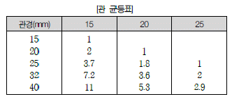
- 20mm
- 25mm
- 32mm
- 40mm
(정답률: 57%)
71. 다음 설명에 알맞은 냉동기는?
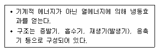
- 터보식 냉동기
- 흡수식 냉동기
- 스크류식 냉동기
- 왕복동식 냉동기
(정답률: 81%)
72. 카(car)가 최상층이나 최하층에서 정상 운행위치를 벗어나 그 이상으로 운행하는 것을 방지하는 엘리베이터 안전장치는?
- 완충기 (buffer)
- 가이드 레일(guide rail)
- 리미트 스위치(limit switch)
- 카운터 웨이트(counter weight)
(정답률: 80%)
73. 10[Ω]의 저항 10개를 직렬로 접속할 때의 합성저항은 병렬로 접속할 때의 합성저항의 몇 배가 되는가?
- 5배
- 10배
- 50배
- 100배
(정답률: 72%)
74. 다음 중 조명률에 영향을 끼치는 요소로 볼 수 없는 것은?
- 실의 크기
- 마감재의 반사율
- 조명기구의 배광
- 글레어(glare)의 크기
(정답률: 63%)
75. 압력수조방식의 급수방식에 대한 설명 중 옳지 않은 것은?
- 정전 시에 급수가 불가능하다.
- 급수공급압력이 항상 일정하다.
- 시설비 및 유지관리비가 많이 든다.
- 단수 시에 일정량의 급수가 가능하다.
(정답률: 67%)
76. 대규모 사무실 빌딩에 운행속도가 150[m/min]인 승용 엘리베이터를 설치하고자 할 때, 이 엘리베이터의 구동 방식으로 가장 적합한 것은?
- 교류 1단
- 교류 2단
- 직류 기어드
- 직류 기어레스
(정답률: 76%)
77. 다음의 공기조화방식 중 전공기 방식에 해당하지 않는 것은?
- 단일덕트방식
- 2중덕트방식
- 멀티존 유닛방식
- 팬코일 유닛방식
(정답률: 77%)
78. 다음 그린은 여름철 냉방시 실내공기와 외기를 혼합하여 냉수 코일로 냉방하는 공기선도상의 각 점의 상태를 나타낸 것이다. 각 점의 상태를 옳게 나타낸 것은?
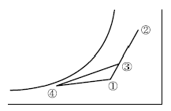
- ① 실내공기, ② 외기, ③ 혼합공기, ④ 취출공기
- ① 외기, ② 실내공기, ③ 혼합공기, ④ 취출공기
- ① 혼합공기, ② 외기, ③ 실내공기, ④ 취출공기
- ① 실내공기, ② 외기, ③ 취출공기 ④ 혼합공기,
(정답률: 61%)
79. 다음 설명에 알맞은 통기관의 종류는?
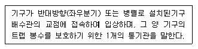
- 공용통기관
- 결합통기관
- 각개통기관
- 신정통기관
(정답률: 33%)
80. 대기압하의 물 10kg을 10℃에서 60℃로 가열하는데 필요한 열량은?(오류 신고가 접수된 문제입니다. 반드시 정답과 해설을 확인하시기 바랍니다.)
- 500 kJ
- 1257 kJ
- 1676 kJ
- 2095 kJ
(정답률: 37%)
5과목: 건축법규
81. 시설물의 부지 인근에 부설주차장을 설치하는 경우, 해당부지의 경계선으로부터 부설주차장의 경계선까지의 거리기준으로 옳은 것은?
- 직선거리 300m 이내
- 도보거리 800m 이내
- 직선거리 500m 이내
- 도보거리 1000m 이내
(정답률: 71%)
82. 건축물의 건축허가를 신청할 때 에너지절약계획서를 제출하여야 하는 대상 건축물 기준으로 옳지 않은 것은?(관련 규정 개정전 문제로 여기서는 기존 정답인 2번을 누르면 정답 처리됩니다. 자세한 내용은 해설을 참고하세요.)
- 업무시설로서 당해 용도에 사용되는 바닥면적의 합계가 3,000m2 이상인 건축물
- 의료시설로서 그 용도에 사용되는 바닥면적의 합계가 1,000m2 이상인 건축물
- 공동주택 중 기숙사로서 그 용도에 사용되는 바닥면적의 합계가 2,000m2 이상인 건축물
- 제1종 근린생활시설 중 목욕장으로서 당해 용도에 사용되는 바닥면적의 합계가 500m2 이상인 건축물
(정답률: 69%)
83. 특별피난계단의 구조에 관한 기준 내용으로 옳지 않은 것은?
- 계단은 내화구조로 하되, 피난층 또는 지상까지 직접 연결되도록 할 것
- 계단실 및 부속실의 실내에 접하는 부분의 마감은 불연재료로 할 것
- 출입구의 유효너비는 0.85미터 이상으로 하고 피난 반대방향으로 열 수 있을 것
- 계단실에는 노대 또는 부속실에 접하는 부분외에는 건축물의 내부와 접하는 창문등을 설치하지 아니할 것
(정답률: 62%)
84. 다음 중 노외주차장의 출구 및 입구를 설치할 수 있는 곳은?
- 종단 구배가 10%를 초과하는 도로
- 횡단보도에서 5m 이내의 도로의 부분
- 중학교의 출입구로부터 20m 이내의 도로의 부분
- 장애인복지시설의 출입구로부터 20m 이내의 도로의 부분
(정답률: 53%)
85. 다음 중 국토의 계획 및 이용에 관한 법률상 공공시설에 속하지 않는 것은?
- 행정청이 설치한 공동구
- 행정청이 설치한 봉안시설
- 행정청이 설치하지 아니한 광장
- 행정청이 설치하지 아니한 저수지
(정답률: 62%)
86. 다음의 옥상광장 등의 설치에 관한 기준 내용 중 ( )안에 알맞은 것은?
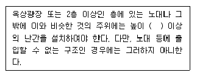
- 1.0미터
- 1.2미터
- 1.5미터
- 1.8미터
(정답률: 77%)
87. 특별시장ㆍ광역시장, 시장ㆍ군수 또는 구청장이 설치하는 노외주차장에는 주차대수 몇 대마다 한 면의 장애인 전용 주차구획을 설치하여야 하는가?
- 30대
- 50대
- 100대
- 300대
(정답률: 64%)
88. 다음 중 개축에 해당하지 않는 것은? (단, 한옥이 아닌 경우)
- 기존 건축물의 전부를 철거하고 그 대지에 종전과 같은 규모의 범위에서 건축물을 다시 축조하는 것
- 기존 건축물의 내력벽, 기둥, 보를 철거하고 그 대지에 종전과 같은 규모의 범위에서 건축물을 다시 축조하는 것
- 기존 건축물의 내력벽, 기둥을 철거하고 그 대지에 종전과 같은 규모의 범위에서 건축물을 다시 축조하는 것
- 기존 건축물의 내력벽, 보, 지붕틀을 철거하고 그 대지에 종전과 같은 규모의 범위에서 건축물을 다시 축조하는 것
(정답률: 54%)
89. 공연장의 개별관람석에 다음과 같이 출구를 설치하였다. 관련 기준에 부합되지 않는 것은? (단, 개별관람석의 바닥 면적은 900m2이다.)
- 출구를 3개소 설치하였다.
- 각 출구의 유효너비를 1.9m로 하였다.
- 출구의 유효너비의 합계를 5.0m로 하였다.
- 출구로 쓰이는 문을 바깥 여닫이로 하였다.
(정답률: 68%)
90. 다음 중 방화구조에 해당하지 않는 것은?
- 심벽에 흙으로 맞벽치기 한 것
- 철망모르타르로서 그 바름두께가 2cm 이상인 것
- 시멘트모르타르 위에 타일을 붙인 것으로서 그 두께의 합계가 2.5cm 이상인 것
- 석고판 위에 시멘트모르타르를 바른 것으로서 그 두께의 합계가 2cm 이상인 것
(정답률: 53%)
91. 주요구조부를 내화구조로 해야 하는 대상건축물 기준으로 옳지 않은 것은?
- 장례식장의 용도를 쓰는 건축물로서 집회실의 바닥면적의 합계가 200제곱미터 이상인 것
- 판매시설의 용도로 쓰는 건축물로서 그 용도로 쓰는 바닥면적의 합계가 500제곱미터 이상인 것
- 운수시설의 용도로 쓰는 건축물로서 그 용도로 쓰는 바닥면적의 합계가 500제곱미터 이상인 것
- 문화 및 집회시설 중 전시장의 용도로 쓰는 건축물로서 그 용도로 쓰는 바닥면적의 합계가 400제곱미터 이상인 것
(정답률: 53%)
92. 다음 중 시설보호지구의 지정 목적에 속하지 않는 것은?(관련 규정 개정전 문제로 여기서는 기존 정답인 2번을 누르면 정답 처리됩니다. 자세한 내용은 해설을 참고하세요.)
- 항만의 보호
- 문화재의 보호
- 학교시설의 보호
- 항공기의 안전운항
(정답률: 67%)
93. 공개 공지 또는 공개 공간을 설치하여야 하는 대상 지역이 아닌 것은? (단, 연면적의 합계가 5천제곱미터인 문화 및 집회시설인 경우)
- 일반주거지역
- 전용주거지역
- 준주거지역
- 준공업지역
(정답률: 70%)
94. 건축허가신청에 필요한 기본설계도서 중 건축계획서에 표시하여야 할 사항으로 옳지 않은 것은?
- 건축면적
- 주차장 규모
- 공개공지 및 조경계획
- 건축물의 용도별 면적
(정답률: 63%)
95. 다음의 건축물의 에너지 이용과 폐자재 활용과 관련된 기준 내용 중 밑줄 친 “대통령령으로 정하는 용도와 규모의 건축물” 에 해당하지 않는 것은?(관련 규정 개정전 문제로 기존 정답은 1번입니다. 여기서는 1번을 누르면 정답 처리 됩니다. 자세한 내용은 해설을 참고하세요.)
- 연면적 1000제곱미터인 수련시설
- 연면적 1000제곱미터인 공동주택
- 연면적 500제곱미터인 종교시설
- 연면적 500제곱미터인 장례식장
(정답률: 72%)
96. 전용주거지역 안에서 건축물을 건축하는 경우 일조 등의 확보를 위해 건축물의 각 부분을 정북방향으로의 인접 대지 경계선으로부터 띄어야 할 거리의 기본 원칙으로 옳지 않은 것은? (단, 공동주택이 아닌 경우)(관련 규정 개정전 문제로 여기서는 기존 정답인 4번을 누르면 정답 처리됩니다. 자세한 내용은 해설을 참고하세요.)
- 높이 4m의 부분 : 1m 이상
- 높이 6m의 부분 : 2m 이상
- 높이 8m의 부분 : 2m 이상
- 높이 10m의 부분 : 3m 이상
(정답률: 71%)
97. 높이 31m를 넘는 각 층의 바닥면적 중 최대 바닥면적이 3,000m2인 건축물에 원칙적으로 설치하여야 하는 비상용 승강기의 최소 설치 대수는?
- 1대
- 2대
- 3대
- 5대
(정답률: 59%)
98. 국토의 계획 및 이용에 관한 법률상 제 2종 일반주거지역안에서 건축할 수 있는 건축물에 해당하지 않는 것은?
- 숙박시설
- 종교시설
- 노유자시설
- 제1종 근린생활시설
(정답률: 64%)
99. 다음 중 부설주차장에 설치하여야 하는 최소 주차대수가 가장 많은 시설물은?
- 10타석을 갖춘 골프연습장
- 정원이 100명인 옥외수영장
- 시설면적이 700제곱미터인 위락시설
- 시설면적이 1,000제곱미터인 판매시설
(정답률: 61%)
100. 공동주택 중 아파트는 주택으로 쓰는 층수가 최소 몇 개층 이상인 주택을 의미하는가? (단, 층수 산정시 1층 전부를 필로티 구조로 하여 주차장으로 사용하는 경우에는 필로티 부분은 층수에서 제외)
- 4
- 5
- 7
- 11
(정답률: 74%)
식당은 주로 식사를 취하는 공간으로, 조용하고 프라이버시를 유지할 수 있는 곳에 위치하는 것이 좋다. 이는 식사를 취하는 동안 편안하게 대화를 나누고 식사를 즐길 수 있도록 하기 위함이다. 따라서 이 설명은 옳은 설명이다.